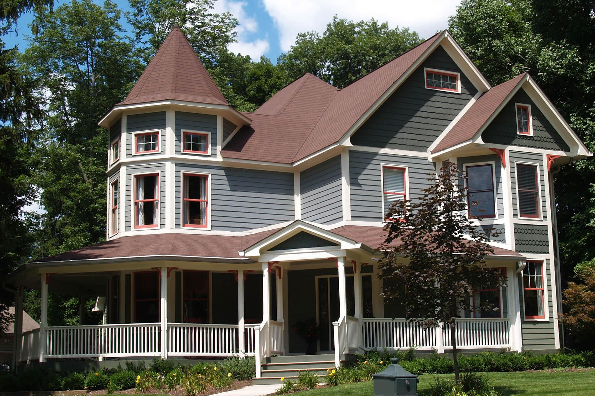

Victorian Style Homes
Step into the timeless beauty of Victorian homes, where classic charm meets unparalleled craftsmanship. Victorian-style homes embody a rich history, stunning architectural details, and a sense of nostalgia that transports you to a bygone era.
A Glimpse Into Victorian Architecture
Victorian homes are a testament to the elegance and innovation of the 19th century. Named after Queen Victoria, the architectural style flourished from the 1830s to the early 1900s, reflecting the social and technological advancements of the time. These homes are characterized by intricate details, grand facades, and unique combinations of design elements.
Key Features of Victorian Homes:
- Ornate Trim & Decorative Woodwork:
- Exquisite carvings, moldings, and millwork are hallmarks of Victorian craftsmanship.
- Towers & Turrets:
- Some Victorian homes include turrets or towers, adding to the dramatic height and complexity of the design.
- Gable Roofs & Steep Pitches:
- Rooflines in Victorian homes often feature steep, angular pitches, giving the home a bold silhouette.
- Bold Color Palettes:
- Victorian homes often use rich, contrasting colors, with ornate trim, shutters, and stained glass adding to their visual appeal.
- Stained Glass & Decorative Windows:
- Stained glass windows were a common feature, showcasing artistry and craftsmanship that tells a story through color and design.
Victorian Design Inspirations
Bringing Classic Charm Into Modern Living
Victorian design isn’t just for history buffs; it’s a way to embrace both the past and the present. Modern homes can be transformed with a few Victorian-inspired touches, blending the old with the new.
Ideas for Incorporating Victorian Style
- Victorian Color Palettes:
- Bold hues like deep greens, purples, and rich golds bring warmth and elegance to any room.
- Antique Furnishings:
- Incorporate vintage pieces or reproduction furniture that mirrors Victorian taste—think velvet upholstery, intricate wood carvings, and brass accents.
- Decorative Molding & Millwork:
- Adding crown molding or wainscoting can instantly transform a room into a Victorian masterpiece.
- Patterned Rugs & Fabrics:
- Floral prints, damasks, and heavy curtains are all part of the Victorian style. Layering different textures and patterns adds to the richness of a room.
Restoration Inspiration:
If you’re restoring a Victorian property, consider preserving elements like stained glass windows, original fireplaces, and ornate staircases. Modern technology allows you to integrate energy-efficient upgrades without compromising the home’s original charm.
A Complete Guide to Victorian Style Houses